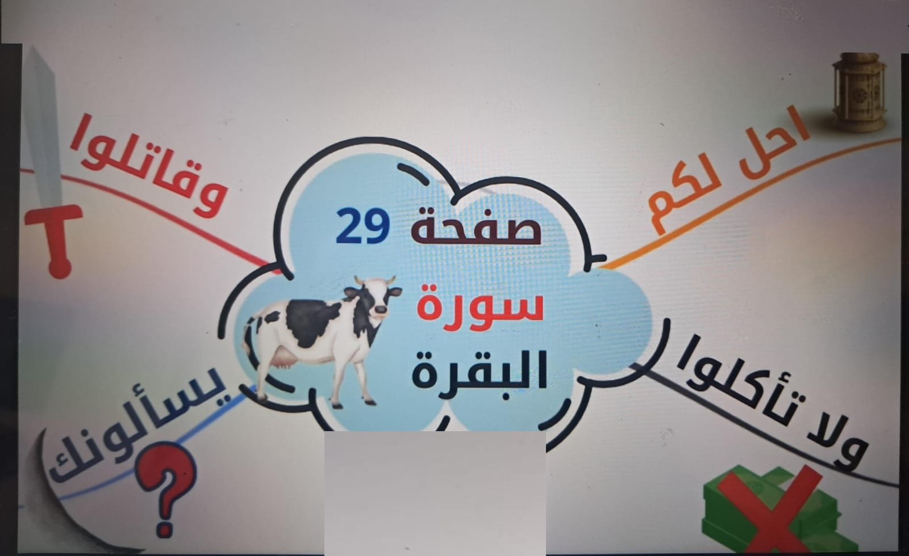
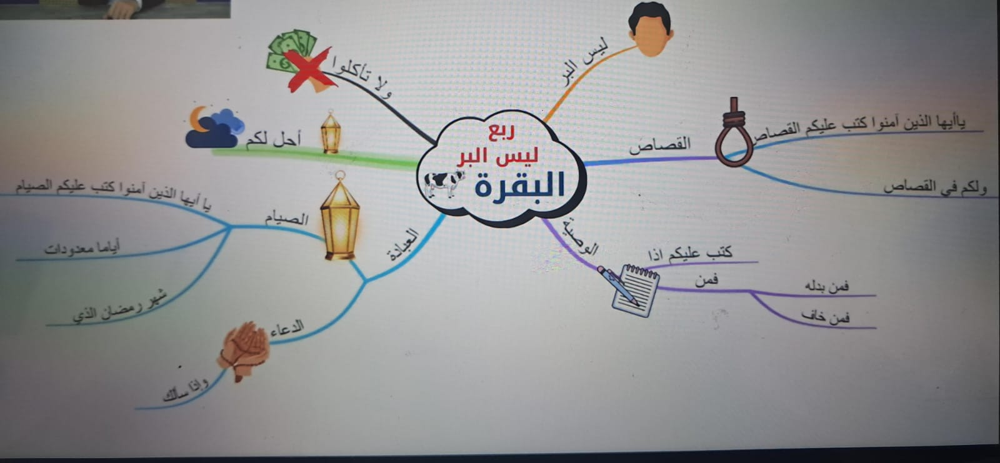

مفهوم الخرائط الذهنية وتطور رحلة الحفظ
أين تقع الخريطة الذهنية وسط بحر التقنيات التي تعلمناها؟
تحدثنا في المحاضرات السابقة عن روابط وتقنيات متنوعة لحفظ كتاب الله؛ بدءاً من الرابط الموضوعي (الذي يربط المعنى والموضوع العام)، والرابط اللفظي (الذي يربط بدايات الآيات ونهاياتها بالحروف والكلمات)، ثم طريقة القصة، وطريقة الترميز، وصولاً إلى طريقة الشجرة لحفظ المتشابهات والأرقام بالبدائل.
الخرائط الذهنية تشبه في شموليتها طريقة الشجرة في أنها قابلة للتطبيق على أي صفحة من صفحات القرآن الكريم بدون استثناء! سواء احتوت الصفحة على قصة أم لا، وسواء وجد رابط لفظي أم لا. ولكن الخريطة الذهنية تتميز بأنها تجمع كل هذه الطرق في إطار بصري حركي موحد، وتنقش الآيات في العقل كنظام إحداثيات جغرافي لا يضيع منه تفصيل.
تركز كل منها على زاوية معينة: القصة تربط التسلسل، الترميز يثبت كلمات مجردة، والشجرة تربط المتشابهات بالأرقام.
لوحة شاملة تجمع الموضوع (المركز) والآيات (الفروع) والرموز والألوان، وتُشغل الحواس كاملة في جلسة واحدة.
أنواع الذاكرة الثلاثة: لماذا الخريطة الذهنية خارقة؟
التفسير العصبي لقوة ثبات الخريطة الذهنية في الدماغ
يمتلك الإنسان في دماغه ثلاثة قنوات تخزين رئيسية للمعلومات: الذاكرة البصرية، الذاكرة السمعية، والذاكرة الإجرائية (الحركية). الحفظ التقليدي يكتفي عادةً بالسمع والتكرار المجرد، أما الخريطة الذهنية فتستنفر القنوات الثلاث في آن واحد!
1. الذاكرة البصرية (العين)
تستقبل الألوان الزاهية، تشعبات الفروع المنحنية، والرموز والأيقونات الرسومية. يتذكر العقل شكل الخريطة وموقع كل آية تلقائياً كما تلتقط الكاميرا المشهد.
2. الذاكرة السمعية (الأذن)
تنشط عندما ترتل الآية بصوتك أثناء رسم الفرع وتسمع نغمات التلاوة وتكرر ألفاظ رؤوس الآيات. نبرة الصوت ورنين الكلمات يرسخان في الفص الصدغي.
3. الذاكرة الإجرائية (الحركة)
الذاكرة القائمة على الفعل والإجراء الحركي (مثل رفع اليدين عند ذكر السماء 👆، أو تمثيل حركة ما). وفي الخريطة: حركة اليد بالقلم وتلوين الفروع تثبت مسارات عصبية حسية لا تمحى!
عندما تتحد (العين 👁️ + الأذن 👂 + حركة اليد ✋)، يتحول الحفظ من مجهود شاق إلى بصمة ثلاثية الأبعاد يستحيل على النسيان اختراقها!
الأدوات الأربعة والقواعد الذهبية لتصميم الخريطة
ماذا نحتاج قبل البدء؟ ولماذا يكره الدماغ السطور المستقيمة؟
1. ورقة بيضاء غير مسطرة
ضرورة قاطعة: بدون خطوط أو سطور؛ لأن العقل الطبيعي ينفر من القيود المستقيمة!
2. ألوان خشبية متنوعة
ألوان متعددة زاهية، نستخدم لوناً خاصاً ومستقلاً لكل فرع وآية.
3. عقل مركز وفايق
أن تكون في قمة النشاط واليقظة والاستعداد الذهني الصافي بدون تشتت.
4. خيال وإبداع وتناغم الفصين
تشغيل الفص الأيمن (خيال، فن، ألوان) مع الفص الأيسر (كلمات، نصوص، تسلسل).
المخ البشري لا يحب الخطوط المستقيمة ولا يتعامل معها في طبيعته الحيوية! إذا نظرت إلى تكوين جسم الإنسان العجيب (شرايين الدم، الشعب الهوائية، التشعبات العصبية في الدماغ، عروق أوراق الشجر، مسارات الأنهار في الطبيعة) تجدها كلها منحنية وتتفرع بسلاسة وبدون أي زوايا حادة مستقيمة. الورقة المسطرة تسجن العقل في قوالب جامدة وتحد من تدفق الأفكار، بينما الورقة البيضاء تمنحه أفقاً حراً للتمدد والتخيل.
📐 خطوات رسم وتشكيل الخريطة الذهنية القرآنية:
حدد ما الذي سترسم له الخريطة بدقة: هل هي صفحة واحدة؟ أم ربع كامل؟ أم حزب؟ أم سورة بأكملها؟
نضع في منتصف الورقة دائرة أو شكلاً بارزاً يمثل المحور الأساسي (مثلاً: رقم الصفحة، أو اسم السورة والربع). ونحرص على تصميمه بـ 3 ألوان مختلفة أو أكثر مع رسمة معبرة واضحة؛ لأن هذا المركز هو أول ما تقع عليه عين القارئ ويجب أن يشد الانتباه بقوة!
نبدأ بتفريع الآيات انطلاقاً من الجزء العلوي الأيمن ونتحرك مع عقارب الساعة (1 ➜ 2 ➜ 3 ➜ 4). هذا الاتجاه الدائري الموحد يمنع التشتت ويجعل استرجاع الترتيب تلقائياً في الذاكرة.
كل فرع يمثل آية (أو موضوعاً فرعياً) بلون مختلف تماماً عن الفرع السابق. ونضع على الفرع: رأس الآية + رمز أو رسمة مصغرة + اختيار اللون بحسب الدلالة النفسية (مثلاً: اللون الأحمر لآيات القتال والتحذير ﴿وَقَاتِلُوا فِي سَبِيلِ اللَّهِ﴾، والأخضر للصيام والجنة، والأصفر للأهلة والنور).
التطبيقات العملية والشواهد القرآنية المصورة
خريطة الصفحة الواحدة (ص 29) + خريطة الربع الكامل (ربع ليس البر)
تحليل خريطة الصفحة 29 من سورة البقرة

رقم الصفحة (29) في المنتصف + رسمة بقرة تعبر عن اسم السورة، مصممة بألوان واضحة وجذابة لتكون أول ما تركز عليه العين.
﴿أُحِلَّ لَكُمْ لَيْلَةَ الصِّيَامِ الرَّفَثُ إِلَىٰ نِسَائِكُمْ...﴾
الرمز البصري: فانوس وهلال رمضان للدلالة على فريضة الصيام وأحكام ليالي رمضان.
﴿وَلَا تَأْكُلُوا أَمْوَالَكُم بَيْنَكُم بِالْبَاطِلِ...﴾
الرمز البصري: نقود / أموال موضوع عليها علامة خطأ (❌) إشارة لحرمة أكل أموال الناس بالباطل والرشوة.
﴿يَسْأَلُونَكَ عَنِ الْأَهِلَّةِ قُلْ هِيَ مَوَاقِيتُ لِلنَّاسِ وَالْحَجِّ...﴾
الرمز البصري: علامة استفهام (❓) بجوار هلال القمر لتمثيل السؤال عن مراحل القمر ومواسم العبادة.
﴿وَقَاتِلُوا فِي سَبِيلِ اللَّهِ الَّذِينَ يُقَاتِلُونَكُمْ...﴾
الرمز والدلالة اللونية: سيف / سلاح مع اختيار اللون الأحمر ليعكس الدلالة النفسية للجهاد والقتال ورد العدوان.
تحليل خريطة ربع "ليس البر" (دمج الخريطة الذهنية مع الروابط الموضوعية)

عند الانتقال من صفحة واحدة إلى ربع كامل، لا نوزع الآيات عشوائياً، بل ندمج الخريطة الذهنية مع الرابط الموضوعي؛ فنقسم الربع إلى موضوعات كبرى رئيسية، ثم نخرج من كل موضوع فرعي الفروع الصغرى للآيات التابعة له:
سورة البقرة + ربع ليس البر + رسمة البقرة بالألوان المتعددة في قلب الصفحة.
آية جامعة لأركان الإيمان والإنفاق والوفاء ﴿لَّيْسَ الْبِرَّ أَن تُوَلُّوا وُجُوهَكُمْ﴾ برمز شخص وجوهره.
﴿كُتِبَ عَلَيْكُمُ الْقِصَاصُ فِي الْقَتْلَى﴾ و﴿وَلَكُمْ فِي الْقِصَاصِ حَيَاةٌ﴾ برمز حبل أو ميزان عدالة.
﴿كُتِبَ عَلَيْكُمْ إِذَا حَضَرَ أَحَدَكُمُ الْمَوْتُ إِن تَرَكَ خَيْرًا الْوَصِيَّةُ﴾ برمز ورقة وقلم وصية.
فروع آيات الصيام ﴿كُتِبَ عَلَيْكُمُ الصِّيَامُ﴾، متبوعة بفرع آية الدعاء العظيمة ﴿وَإِذَا سَأَلَكَ عِبَادِي عَنِّي فَإِنِّي قَرِيبٌ﴾ برمز كفي ضراعة ودعاء، ثم أحكام ليلة الصيام.
محاكي الخريطة الذهنية: تتبع عقارب الساعة
جرب بناء وتفعيل خريطة الصفحة 29 في ذاكرتك الآن! انقر على الفروع أدناه بترتيب عقارب الساعة لاختبار تذكرك لرأس الآية والرمز واللون الدلالي:
اختر أحد الفروع في الأعلى لترى كيف يتجسد في الخريطة الذهنية وتستمع له!
اختبار المحاضرة التفاعلي (5 أسئلة)
تحقق من استيعابك لقواعد الخرائط الذهنية وأسرار الدماغ
1. ما هي أنواع الذاكرة الثلاثة التي تنشطها الخريطة الذهنية وتجمع بينها؟
2. لماذا نشترط استخدام ورقة بيضاء "غير مسطرة" عند رسم الخريطة الذهنية؟
3. بأي اتجاه ندور عند رسم وتفريغ فروع الآيات في الخريطة الذهنية؟
4. ما هي الشروط الأساسية للنواة والمركز في منتصف الخريطة الذهنية؟
5. في خريطة الصفحة 29 من سورة البقرة، لماذا تم اختيار اللون الأحمر لآية ﴿وَقَاتِلُوا فِي سَبِيلِ اللَّهِ﴾؟
أحسنت صنعاً! أتقنت أسرار الخرائط الذهنية بامتياز!
عقلك الآن جاهز لتحويل أي صفحة قرآنية مستعصية إلى لوحة إبداعية ملونة تنقشها حواسك الثلاث في ذاكرتك الدائمة!
الواجب العملي والتمارين التطبيقية
ممارسة يدوية لتثبيت الذاكرة الإجرائية
ارسم خريطتك الخاصة
أحضر ورقة بيضاء غير مسطرة وألوان خشب، واختر صفحة من سورة تحفظها، وارسم لها خريطة ذهنية كاملة مع عقارب الساعة بـ 3 ألوان للمركز ورمز لكل آية.
تفعيل الذاكرة الإجرائية
أثناء رسم كل فرع، رتل الآية بصوت واضح (سمعية) ومثل بحركة يدك أو جسدك المعنى المحوري للآية (إجرائية) لدمج القنوات الثلاث.
المراجعة بالاسترجاع البصري
أغلق الورقة والمصحف، وأغمض عينيك، واستحضر صورة الخريطة الذهنية في مخيلتك وسر مع عقارب الساعة مستعرضاً رؤوس الآيات ورموزها وألوانها.
مع الخرائط الذهنية.. يتحول المصحف الشريف إلى حديقة بصرية مبهجة ومحفورة في وجدانك!
كل لون تختاره، وكل فرع تخطه بيدك، هو جسر نوراني يربط قلبك وعقلك بآيات الذكر الحكيم.